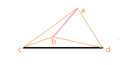
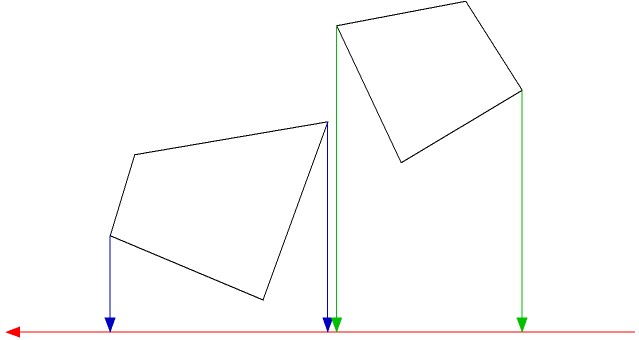
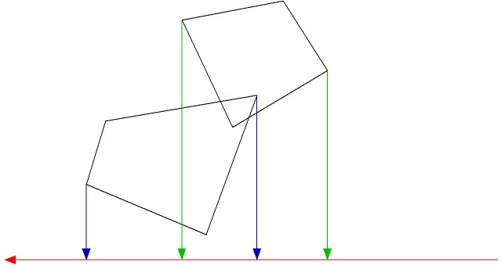
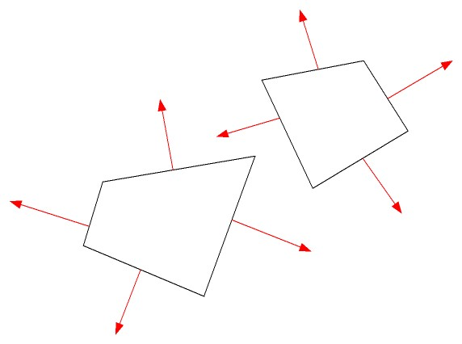
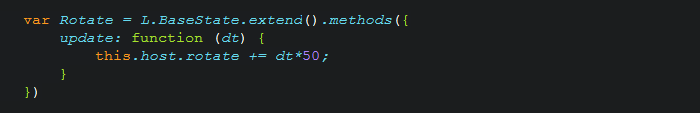

Game of Html5
^^
About Me:
- 陈虹如 - 岑安 - horizon
- blog: hongru.cnblogs.com
- github: github.com/hongru
- e-mail:
- hongru.chenhr@gmail.com
- canvas的动画实现
- 简易碰撞监测
- 游戏流程的控制
- Dom和canvas混合
- - 矢量动画
- - 帧动画
- - 骨骼动画
矢量 - No Textures?
注意：
- beginPath & closePath
- save & restore
Pro:
- 实现简单
- 计算消耗小
Less:
- 大量素材支撑
- 动作可控性低
骨骼动画
骨骼动画的实现思路是从人体或动物的身体的运动方式而来的。动画人物的身体（肉、皮肤）是一个网格(Mesh)模型，网格的内部是一个骨架结构。当人物的骨架运动时，身体就会跟着骨架一起运动。骨架是由一定数目的骨骼组成的层次结构，每一个骨骼的排列和连接关系对整个骨架的运动有很重要的影响。每一个骨骼数据都包含其自身的动画数据。和每个骨架相关联的是一个“蒙皮”(Skin)模型，它提供动画绘制所需要的几何模型(Vertex,Normal,etc)和纹理材质信息。每个顶点都有相应的权值(Weight)，这些权值定义了骨骼的运动对有关顶点的影响因子。当把动画人物的姿势和全局运动信息作用到骨架上时，这个“蒙皮”模型就会跟随骨架一起运动。
More...
- 易用的骨骼动画可视编辑
- 前向动力学(FK)和逆向动力学(IK)
About Collision

我们只考虑最简单的 (^^)
But...

那么，我们换个思路

- line A: a1*x + b1 - y = 0
- line B: a2*x + b2 - y = 0


- 或者利用 三角 外积，类似的思路...
- S_abc * S_abd < 0
- S_acd * S_bcd < 0

function signed2DTriArea(pointA, pointB, pointC) {
return ((pointA.x - pointC.x) * (pointB.y - pointC.y)
- (pointA.y - pointC.y) * (pointB.x - pointC.x));
}
简单的，比如：
以上为寻边碰撞检测，优点：检测紧凑性好，能拿到碰撞点，可根据碰撞点和质心坐标做碰撞后方向的反馈等。缺点：计算量，复杂度略高
AABB: AABB 包围盒是与坐标轴对齐的包围盒, 简单性好, 紧密性较差(尤其对斜对角方向放置的瘦长形对象)
OBB: 方向包围盒，基于Separating Axis Theorem(SAT)（分离轴定律），紧密型较好，计算量适中，但无法取得具体的碰撞点和角度。适用于不需考虑碰撞后反馈的模型。
SAT为一种快速检测不规则凸多边型是否碰撞的算法。
概念如下：给予两个凸多边形物体，如果能找到一个轴，使两个物体在该轴上的投影互不重叠，则这两物体可判断为没有碰撞发生。这个轴就是一个分离轴 Separating Axis
概念如下：给予两个凸多边形物体，如果能找到一个轴，使两个物体在该轴上的投影互不重叠，则这两物体可判断为没有碰撞发生。这个轴就是一个分离轴 Separating Axis


2D的情况，可能存在的分离轴为垂直于多边形各个边的轴
如果找到一个轴，使两多边形的边在该轴上的投影互补重叠，则可判断为不碰撞，计算可退出。

FSM 的意义
- update [和 draw] 的派发模型
- 流程控制，状态解耦
- 状态流转的事件机制
以功能为节点划分
以流程为节点划分




对待“新技术”和“老技术”，需要宽容的心态，有容乃大
Thanks